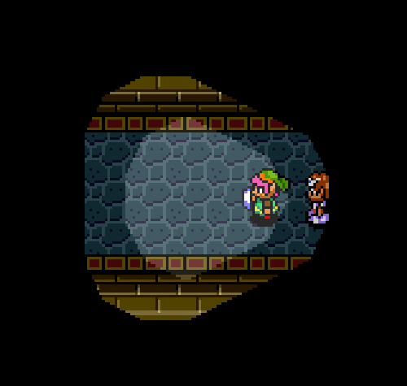
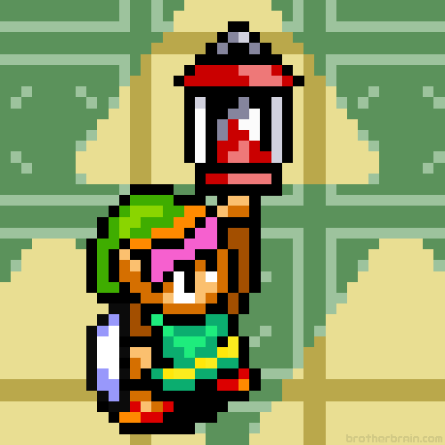
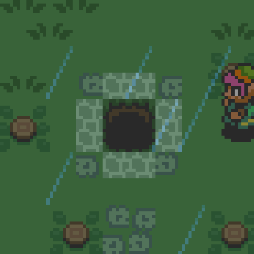
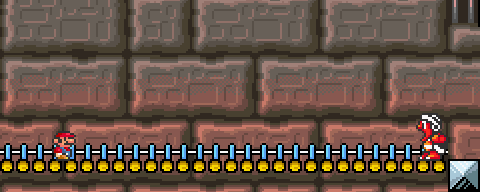
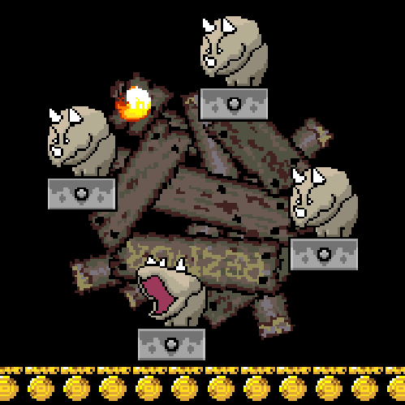
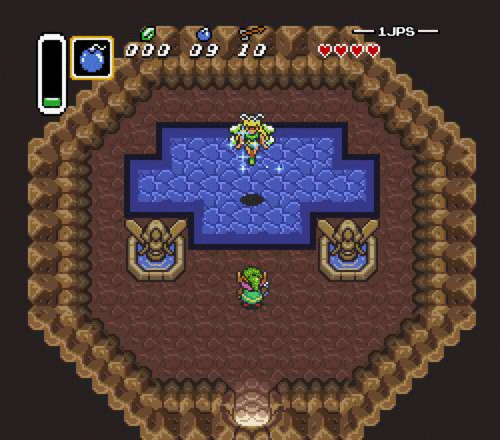
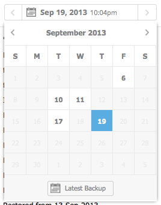
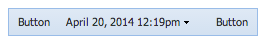
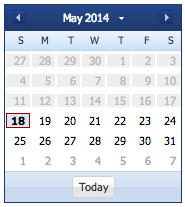
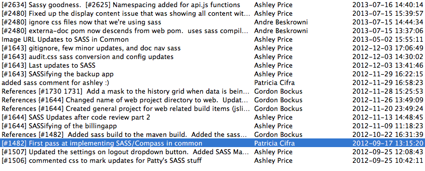

your style
your style
Patty Cifra
@pncifra
Presented by
Ashley Price
@classicallygeek
Why Use a Pre-processor?
Pros:
- It will make your CSS DRY (Code reuse across multiple projects)
- Maintainability
- Organized
- Saves you time (mixins, variables, reduced redundancy)
- Frameworks (level up your CSS, compass)
Cons:
This can take a lot of time
Additionally, this will fail if your entire team isn't onboard
Why Sass and moreso why SCSS
Sass
- Indented syntax of Sass was inherited from HAML
- Sass doesn't complain about missing semi-colons
EXAMPLE
=border-radius($radius)
-webkit-border-radius: $radius
-moz-border-radius: $radius
-ms-border-radius: $radius
border-radius: $radius
.box
+border-radius(10px)
SCSS
- Superset of CSS. Contains all the features of CSS and features of Sass as well
- encourages proper nesting of rules
- encourages more modular code with @extend
- existing tools often work with SCSS
- integration with an existing CSS codebase is much easier
- SCSS provides a much lower barrier to entry
EXAMPLE
@mixin border-radius($radius) {
-webkit-border-radius: $radius;
-moz-border-radius: $radius;
-ms-border-radius: $radius;
border-radius: $radius;
}
.box { @include border-radius(10px); }
Why not an automatic conversion tool?
Conversion tools exist that can turn your CSS files into sass files. They can also format them for into beauitfully tabbed and spaced files, but there isn't a tool that can refactor your existing CSS into well-structured Sass.
Your first Quest
We'll help you navigate the darkness and get setup to go
Leverage imports and partials
to create a modularized code base for maintainabilityPartials
Be Structured
/web/sass
->home.scss
->articlesSelected.scss
->articlesLanding.scss
/web/sass/mixins
->_colours.scss
->_typography.scss
->_layout.scss
/web/sass/partials
->_base.scss
->_reset.scss
->_layout.scss
->_buttons.scss
->_comments.scss
->_tooltip.scss
@Import
@import "mixins/colors";
@import "mixins/typography";
@import "mixins/functions";
@import "partials/reset";
@import "partials/base";
@import "partials/layout";
@import "partials/buttons";
Compass
The Compass Lifestyle
- create (create a new compass project)
- init (initialize an existing project to work with compass)
- install (install a pattern from an extension into a project)
- compile (compile the project's sass files into CSS)
- watch (watch the project for changes and compile whenever it does)
- config (emit a configuration file at the location specified)
- validate (validate the generated CSS)
Example
# Require any additional compass plugins here.
# Set this to the root of your project when deployed:
http_path = "../"
css_dir = "style"
sass_dir = "sass"
images_dir = "image"
javascripts_dir = "javascripts"
# output_style = :expanded or :nested or :compact or :compressed
output_style = :compressed
# To enable relative paths to assets via compass helper functions.
# relative_assets = true
line_comments = false
Your Compass Toolbox
Box Shadow
// Default single box shadow
#box-shadow-default {
@include single-box-shadow;
}
// Box shadow with custom settings
#box-shadow-custom {
@include box-shadow(red 2px 2px 10px);
}
#box-shadow-custom-multiple {
@include box-shadow(rgba(blue, 0.4) 0 0 25px, rgba(green, 0.2) 0 0 3px 1px inset);
}
Opacity
#opacity-10 {
@include opacity(0.1);
}
#opacity-20 {
@include opacity(0.2);
}
#opacity-50 {
@include opacity(0.5);
}
#opaque {
@include opaque;
}
#transparent {
@include transparent;
}
Border Radius
#border-radius {
@include border-radius(25px);
}
#border-radius-top-left {
@include border-top-left-radius(25px);
}
#border-radius-top-right {
@include border-top-right-radius(25px);
}
#border-radius-bottom-left {
@include border-bottom-left-radius(25px);
}
#border-radius-bottom-right {
@include border-bottom-right-radius(25px);
}
Variables
Colors, Fonts, etc.
Example
$gothamRounded: 'Gotham Rounded A', 'Gotham Rounded B', arial narrow;
$helvetica: Helvetica Neue, Helvetica, Arial, Sans Serif;
$arial: Arial, sans-serif;
$tahoma: tahoma, arial, sans-serif;
$primaryFont: 'Open Sans', sans-serif;
$groupTitles: $gothamRounded;
$leagueGothic: league-gothic, arial narrow, sans-serif;
Nesting
A spell for organizing and structuring your code
.sca-buy-container {
@include border-radius(4px);
background-color: $bright-red;
color: $white;
.sca-buy-header,
.sca-buy-subtext,
.sca-buy-link {
font-weight: bold;
}
.sca-buy-header {
font-size: 1.2em;
}
}
Beware
Potential Pit Falls include:
Non-resuable code due to extremely specific selectors spawned by too much nesting and mimicing your DOM structure.
URL-Helpers

Seperate your styelsheets from your environment.
Your config.rb file will set up the path to image assets.
images_dir = "image"
And in your SCSS file you can now use "image-url" helper
.sca-credit-card-img {
background: image-url('creditcard.svg') right no-repeat;
background-size: contain;
}
Mixins
Example
@mixin down-arrow($color, $size) {
content: ' ';
border-style: solid;
border-width: $size $size 0 $size;
border-color: $color transparent transparent transparent;
}
@mixin up-arrow($color, $size) {
content: ' ';
border-style: solid;
border-width: 0 $size $size $size;
border-color: transparent transparent $color transparent;
}
Another Example
@mixin gotham-rounded-font($size) {
font-family: $gothamRounded;
font-style: normal;
font-size: $size;
}
@mixin primary-font($size) {
font-size: $size;
font-family: $primaryFont;
}
@mixin arial($size) {
font-family: $arial;
font-size: $size;
}
Extends
Example
.sca-checkmark {
background-position: center;
background-repeat: no-repeat;
background-size: 14px auto;
margin: 0 10px 0 10px;
}
.sca-checkmark-blue {
@extend .sca-checkmark;
background-image: image-url('checkmark_blue.svg');
}
.sca-checkmark-grey {
@extend .sca-checkmark;
background-image: image-url('checkmark_grey.svg');
}
Mixins vs Extends
While an @extend generates more selectors, @mixin always generates more rules.@extend
.boom {
color: blue;
}
.pow {
@extend boom;
}
CSS output:
. boom, .pow {
color: blue;
}
@mixin
@mixin test {
color: red;
}
.test1 {
@include test;
}
.test2 {
@include test;
}
CSS output
.test1 {
color: red;
}
.test2 {
color: red;
}
Enterprise Foes
Working with frameworks
Robust frameworks are very popular for larger web applications and introduce a number of hurdles.
Let's take a look at some enemies we ran into and how we took them down.
.x-property-grid .x-grid-row .x-grid-property-name .x-grid-cell-inner,
.x-property-grid .x-grid-row-over .x-grid-property-name .x-grid-cell-inner {
padding-left: 12px;
background-image: url('../../resources/themes/grid/property-cell-bg.gif');
background-repeat: no-repeat;
background-position: -16px 2px;
}
Mini-boss:
Overhauling the look of Framework components
Based on a true story
Designers visited the magical fairy cave of inspiration
They invented the Batch Picker
To make their dreams come true, we create a custom component out of ExtJS parts
 But we needed to overhaul the entire look of the component
We often Reuse components
But they can be styled completely differently
Implementation
1000s of lines of CSS means there's only two ways to do thisA Grind
Torturous, never-ending level grind
A quest chain
Make it an iterative process
Boss Drop
Our code is signficantly more maintainable.
And with some practice a lot easier to write!